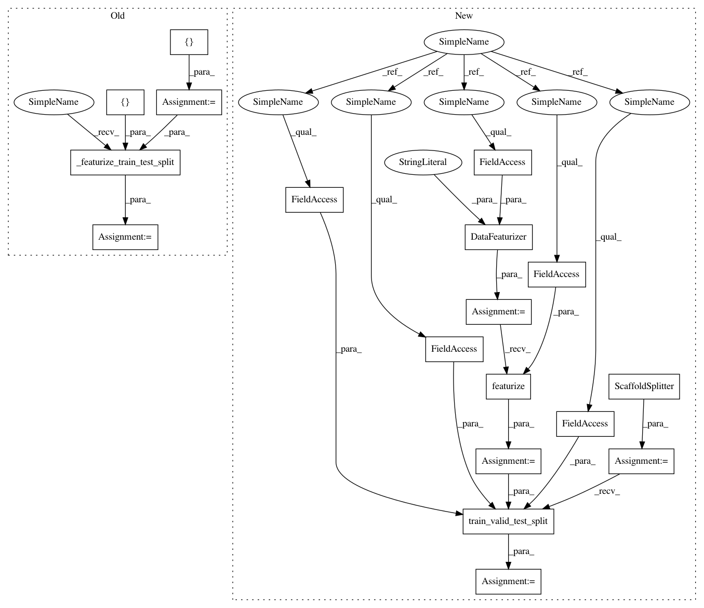

ee2bc2a8daaba5717e49917831ddf8229d1ebe70,deepchem/hyperparameters/tests/test_hyperparam_opt.py,TestHyperparamOptAPI,test_multitask_tf_mlp_ECFP_classification_hyperparam_opt,#TestHyperparamOptAPI#,172
Before Change
def test_multitask_tf_mlp_ECFP_classification_hyperparam_opt(self):
Straightforward test of Tensorflow multitask deepchem classification API.
splittype = "scaffold"
output_transformers = []
input_transformers = []
task_type = "classification"
input_file = os.path.join(self.current_dir, "multitask_example.csv")
tasks = ["task0", "task1", "task2", "task3", "task4", "task5", "task6",
"task7", "task8", "task9", "task10", "task11", "task12",
"task13", "task14", "task15", "task16"]
task_types = {task: task_type for task in tasks}
compound_featurizers = [CircularFingerprint(size=1024)]
complex_featurizers = []
train_dataset, valid_dataset, _, transformers = self._featurize_train_test_split(
splittype, compound_featurizers,
complex_featurizers, input_transformers,
output_transformers, input_file, tasks)
metric = Metric(metrics.matthews_corrcoef, np.mean, mode="classification")
params_dict = {"activation": ["relu"],
"momentum": [.9],
"batch_size": [50],
After Change
params_dict, train_dataset, valid_dataset, transformers,
metric, logdir=None)
def test_multitask_tf_mlp_ECFP_classification_hyperparam_opt(self):
Straightforward test of Tensorflow multitask deepchem classification API.
splittype = "scaffold"
task_type = "classification"
input_file = os.path.join(self.current_dir, "multitask_example.csv")
tasks = ["task0", "task1", "task2", "task3", "task4", "task5", "task6",
"task7", "task8", "task9", "task10", "task11", "task12",
"task13", "task14", "task15", "task16"]
task_types = {task: task_type for task in tasks}
featurizers = [CircularFingerprint(size=1024)]
featurizer = DataFeaturizer(tasks=tasks,
smiles_field=self.smiles_field,
featurizers=featurizers,
verbosity="low")
dataset = featurizer.featurize(input_file, self.data_dir)
splitter = ScaffoldSplitter()
train_dataset, valid_dataset, test_dataset = splitter.train_valid_test_split(
dataset, self.train_dir, self.valid_dir, self.test_dir)
transformers = []
metric = Metric(metrics.matthews_corrcoef, np.mean, mode="classification")
In pattern: SUPERPATTERN
Frequency: 3
Non-data size: 18
Instances
Project Name: deepchem/deepchem
Commit Name: ee2bc2a8daaba5717e49917831ddf8229d1ebe70
Time: 2016-05-30
Author: bharath.ramsundar@gmail.com
File Name: deepchem/hyperparameters/tests/test_hyperparam_opt.py
Class Name: TestHyperparamOptAPI
Method Name: test_multitask_tf_mlp_ECFP_classification_hyperparam_opt
Project Name: deepchem/deepchem
Commit Name: ee2bc2a8daaba5717e49917831ddf8229d1ebe70
Time: 2016-05-30
Author: bharath.ramsundar@gmail.com
File Name: deepchem/hyperparameters/tests/test_hyperparam_opt.py
Class Name: TestHyperparamOptAPI
Method Name: test_multitask_keras_mlp_ECFP_classification_hyperparam_opt
Project Name: deepchem/deepchem
Commit Name: ee2bc2a8daaba5717e49917831ddf8229d1ebe70
Time: 2016-05-30
Author: bharath.ramsundar@gmail.com
File Name: deepchem/hyperparameters/tests/test_hyperparam_opt.py
Class Name: TestHyperparamOptAPI
Method Name: test_singletask_sklearn_rf_ECFP_regression_hyperparam_opt
Project Name: deepchem/deepchem
Commit Name: ee2bc2a8daaba5717e49917831ddf8229d1ebe70
Time: 2016-05-30
Author: bharath.ramsundar@gmail.com
File Name: deepchem/hyperparameters/tests/test_hyperparam_opt.py
Class Name: TestHyperparamOptAPI
Method Name: test_multitask_tf_mlp_ECFP_classification_hyperparam_opt